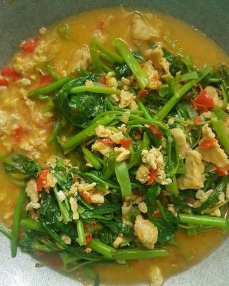

Tumis Kangkung Tempe
Deskripsi
- Tumis kangkung tempe adalah hidangan sayur yang populer di Indonesia, menggabungkan kangkung segar dan tempe yang digoreng atau digoreng setengah matang. Kangkung yang digunakan biasanya segar dan hijau cerah, ditumis dengan bumbu sederhana seperti bawang putih, bawang merah, cabai, dan garam. Sedangkan tempe dipotong kecil-kecil atau tipis, kemudian digoreng hingga kecokelatan dan renyah sebelum dicampurkan ke dalam tumisan. Tumis kangkung tempe biasanya disajikan hangat sebagai lauk pendamping nasi putih, dengan rasa gurih dari bumbu dan aroma harum dari bawang dan cabai. Hidangan ini terkenal karena simpel, sehat, dan mengandung kombinasi tekstur renyah dari tempe serta sayur segar yang menyehatkan.
Bahan-bahan:
- 1 ikat kangkung, siangi dan cuci bersih
- 1/2 papan tempe, potong dadu
- 2 siung bawang putih, iris tipis
- 3 siung bawang merah, iris tipis
- 1 buah cabai merah besar, iris serong (opsional)
- 1/2 buah tomat, potong-potong
- 1 sdm saus tiram
- Garam dan gula secukupnya
- Sedikit air
- Minyak goreng secukupnya
Langkah-langkah:
- Goreng tempe hingga setengah matang atau kecoklatan, angkat dan tiriskan.
- Panaskan sedikit minyak goreng di wajan. Tumis bawang putih, bawang merah, dan cabai merah hingga harum.
- Masukkan tomat, aduk sebentar.
- Masukkan kangkung dan tempe yang sudah digoreng. Aduk cepat.
- Tambahkan saus tiram, garam, dan gula. Beri sedikit air agar bumbu meresap.
- Masak hingga kangkung layu tapi masih renyah. Jangan terlalu lama agar nutrisinya tidak hilang.
- Angkat dan sajikan.